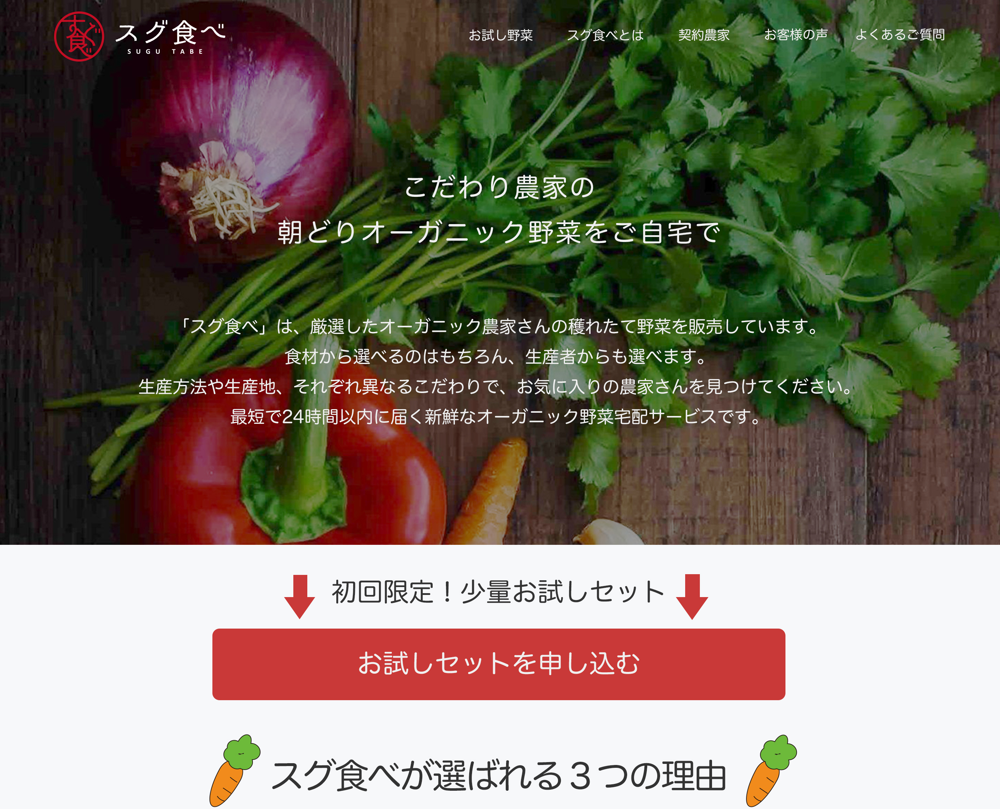

こだわり農家の野菜
産地直送LPサイト

【ポートフォリオURL】 https://organic.risacreate.jp/
【クライアント】スグ食べ様
【制作時期】2021.5~6
【作業期間】1.5ヶ月
【使用ツール】Photoshop、Illustrator、Dreamweaver
【経験】HTML / CSS / jQuery / レスポンシブデザイン
【案件概要】「デジタルハリウッドSTUDIO by LIG」の課題の一つです。
意図・ポイント
ターゲットユーザーである「成長期の子供がいる、食にこだわるママ」に響くよう、「ナチュラルで清楚感があり、ある程度リッチ感のある雰囲気」をコンセプト制作しました。リッチ感がありつつも、手軽にご注文できるナチュラルな印象を出すために、丸みのある細字のヒラギノ丸ゴシックを使い、セクションごとに動く野菜のイラストを配置しました。また、ご購入に導きやすくするため「お試しボタン」を合計４箇所に配置し、装飾は控えめにすることで爽やかな印象を出しました。
問題と解決策
食へのこだわりに強い層に響くような内容でお試し購入に導く、より訴求力の高いランディングページを制作することが課題となっていたため、農家さんの紹介欄に農家さんの写真とコメントを入れて、オーガニック野菜が安心・安全であることを表現することを心掛けました。トップ画像でリッチ感を出し、続いてスグ食べが選ばれる理由、農家さんの紹介、お客様の声、よくあるご質問を載せて、より訴求力が高くご購入に導きやすいLPサイトになるように心掛けました。